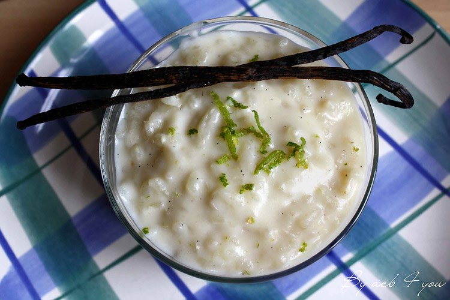

Riz au lait de coco

Description
Ceci est un dessert ou petit-déjeuner à base de riz et lait de coco
Ingrédients
- 200g de riz blanc
- 200 ml de lait de coco
- 500 ml d'eau
- 1 pincée de sel
- 1 gousse de vanille
Etapes de préparation
- Lavez le riz à l'eau froide
- Verser le riz, ajouter le lait de coco, l'eau, le sel et la vanille et cuire à feu normal, à ébullition baisser à feu doux, le couvercle entrouvert, et laisser cuire doucement en remuant de temps en temps pour qu'il ne colle pas au fond. A absorption de l'eau fermer le couvercle, éteindre le feu.
Home page